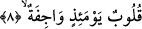

7. Onu ikinci üflemenin takip ettiği gün,
Yani birinciyi izleyen ikinci üflemenin olduğu gün -ki bu ikinci üfleme birinciden
sonra olacaktır- bu sonralık râdife kelimesinin yapısından anlaşılmaktadır. Çünkü
arapçada redife veya redefe fiili “birşeyi ardından izlemek” anlamına gelmektedir.
Kelimenin yapısındaki bu anlamdan dolayı Kamus’ta ifâde edildiği üzere “birisinin bir
kişiyi bineğinin terkisine alması” bu kökten türeyen erdefe fiiliyle anlatılır. Âyet
metnine geri dönecek olursak bu cümle altıncı âyette geçen er-râcife kelimesinden
mukadder haldir ve o günün, dirilme gününün zarfı olduğunu vurgulamaktadır. Buna
göre âyete mânâ vermek gerekirse şöyle deriz: “Sizler, kendisini ikinci üflemenin takip
ettiği sura birinci kez üflendiği gün mutlaka dirileceksiniz; bundan önce değil.” Çünkü
bu zaman, içinde iki üflemenin meydana geleceği akıp giden zamandan ibarettir. Sura
birinci üflemeyle ikinci üfleme arasında kırk yıllık bir süre vardır. Nitekim Keşşaf’ta
bu âyet-i kerime şöyle tefsir olunuyor: Sizler içinde iki üflemenin vaki olacağı o geniş
vakitte diriltileceksiniz. İşte onlar bu geniş süre içinde diriltileceklerdir. Bu, ikinci
üfürülme vaktidir.
el-İrşad’da şöyle deniyor: Öldükten sonra dirilme sâdece sura ikinci kez
üfürüldüğünde gerçekleşeceği halde bunun uzun bir zaman olarak değerlendirilmesi, o
günün korkunçluğunu ve bu günde iki büyük korkunç olayın meydana geleceğini
vurgulamak içindir. Çünkü sura birinci kez üfürüldüğünde ölmeyen hiçbir diri
kalmayacaktır. İkinci kez üfürüldüğünde ise ne kadar ölü varsa tümü dirilip ayağa
kalkacaktır.
8. (O gün) yürekler tir tir titrer.
Sura iki kez üfürülmenin gerçekleştiği “o gün yürekler” kötü amellerinden ve çirkin
fiillerinden dolayı “tir tir titrer.”
Bu âyetin başındaki kulûb kelimesi mübtedâdır. Arapça dilbilgisi kurallarına göre
başında “el” takısı olmayan kelimeler mübtedâ olamazlar. Ancak burada olduğu gibi
“el” takısı almayan kelime bir sıfat almış ise o zaman tahsis görmüş olacağından
mübtedâ olabilir. Kelimenin sonundaki tenvin -her ne kadar karşı çeşit zikredilmemiş
ise de- çeşit bildirme tenvini olarak yorumlansa dahi farketmez. Çünkü mânâ, çeşit
bildirme şeklindedir. Kulûb kelimesinin sonundaki tenvinin “teksir/çokluk bildirme”
olduğunu söylemek ve onu böyle yorumlamak da mümkündür. Tıpkı “şerrahetün zâ
nâbin/tırnaklı obur” cümlesinde olduğu gibi. Herhangi bir şeyin şanını yüceltmek, onun
keyfiyetini açıklamakla olduğu gibi, kemmiyetini bildirmekle de ifâde olunabilir. Bütün
bu açıklamalarımızın ardından âyet-i kerimeye mânâ vermek gerekirse şöyle diyebiliriz:
“O gün bir çok kalpler veya o gün âsi olan kalpler amellerinin kötülüğünden ve